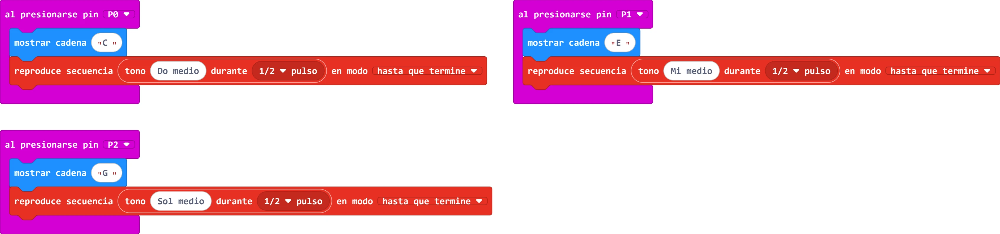
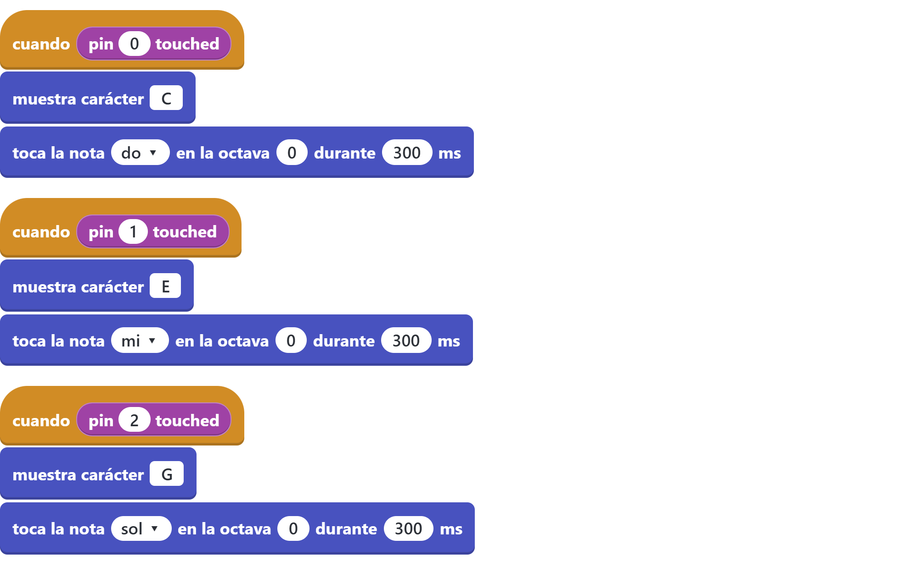

Inicio › Modo experto › Cables de cocodrilo
Piano de frutas
Convertir tres frutas (o plastilina, o papel de aluminio) en teclas de piano conectadas a P0, P1 y P2.
Necesitas
- Cables de cocodrilo (mejor de colores distintos) (4)
- Tres frutas, plastilina o trozos de papel de aluminio
Conexiones
Paso a paso
- Conecta un cable de cocodrilo de P0 a una fruta, otro de P1 a otra y otro de P2 a la tercera.
- Conecta un cuarto cable a GND y sujeta su pinza con la mano (o pégala a tu muñeca).
- Usa al presionarse pin P0cuando · pin 0 touched
pin0.is_touched()para cada fruta, con mostrar cadenamuestra carácterdisplay.show("A")y una reproduce tonotoca la notamusic.pitch(Hz, ms)distinta. - Tocad una canción sencilla.
Ayuda: pistas
- Tu cuerpo cierra el circuito entre GND y el pin. Sin tocar GND, no funciona.
- En MakeCode: al presionarse pin P0. En MicroBlocks: pin 0 touched (biblioteca TouchPin).
Una solución posible
Elige el editor con el que trabajas: la web lo recordará en las demás prácticas.

Probar en el simulador
Es el simulador oficial de MakeCode: pulsa sus botones, toca el logotipo o mueve los controles de los sensores.
Ver y copiar el código JavaScript
input.onPinPressed(TouchPin.P0, function () {
basic.showString("C")
music.play(music.tonePlayable(262, music.beat(BeatFraction.Half)), music.PlaybackMode.UntilDone)
})
input.onPinPressed(TouchPin.P1, function () {
basic.showString("E")
music.play(music.tonePlayable(330, music.beat(BeatFraction.Half)), music.PlaybackMode.UntilDone)
})
input.onPinPressed(TouchPin.P2, function () {
basic.showString("G")
music.play(music.tonePlayable(392, music.beat(BeatFraction.Half)), music.PlaybackMode.UntilDone)
})En MakeCode abre la pestaña JavaScript, borra lo que haya, pega el código y vuelve a Bloques.

Usa las bibliotecas TouchPin, Pantalla LED, Tonos. Al abrir el proyecto se cargan solas.
Abrir en MicroBlocks Descargar .ubp
Abre MicroBlocks en Chrome o Edge. Si pregunta si quieres actualizar una biblioteca a una versión nueva, pulsa Sí.
from microbit import *
import music
while True:
if pin0.is_touched():
display.show("C")
music.pitch(262, 300)
if pin1.is_touched():
display.show("E")
music.pitch(330, 300)
if pin2.is_touched():
display.show("G")
music.pitch(392, 300)Abrir el editor de Python Descargar .py
En el editor de Python pulsa Abrir… y elige el archivo .py, o pega el código.
¿Y si…?
- Prueba con otros materiales: ¿cuáles conducen y cuáles no?
- Haced una orquesta: cada pareja con un instrumento distinto.